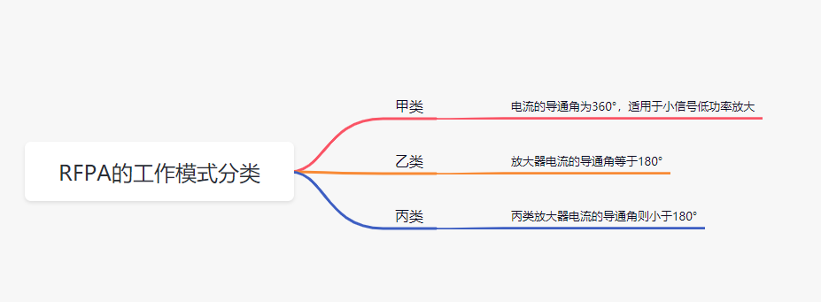
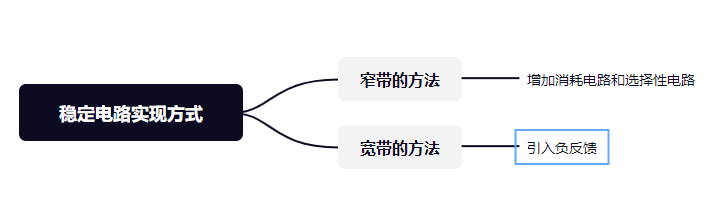

PA简介
PA是Power Amplifier的简称,中文名称为功率放大器,简称“功放”,指在给定失真率条件下,能产生最大功率输出以驱动某一负载的放大器。
对于射频通信系统，PA负责发射通道的信号放大，没有PA，信号覆盖就会成为很大的问题，所以，PA很重要。
1，RFPA的功能
射频功率放大器RFPA是发射系统中的主要部分，其重要性不言而喻。在发射机的前级电路中，调制振荡电路所产生的射频信号功率很小，需要经过一系列的放大一缓冲级、中间放大级、末级功率放大级，获得足够的射频功率以后，才能馈送到天线上辐射出去。为了获得足够大的射频输出功率，必须采用射频功率放大器。功率放大器往往是固定设备或终端的最昂贵、最耗电、效率最低的器件。
在调制器产生射频信号后，射频已调信号就由RFPA将它放大到足够功率，经匹配网络，再由天线发射出去。
放大器的功能，即将输入的内容加以放大并输出。输入和输出的内容，我们称之为“信号”，往往表示为电压或功率。对于放大器这样一个“系统”来说，它的“贡献”就是将其所“吸收”的东西提升一定的水平，并向外界“输出”。这一“提升的贡献”，即为放大器存在的“意义”所在。如果放大器能够有好的性能，那么它就可以贡献更多，这才体现出它自身的“价值”。如果放大器的初始“机制设计”存在着一定的问题，那么在开始工作或者工作了一段时间之后，不但不能再提供任何“贡献”，反而有可能出现一些不期然的“震荡”，这种“震荡”，对于外界还是放大器自身，都是灾难性的。
总结：由基带出来的已调信号频率还不够高，还不能满足直接将信号馈给天线进行辐射，需要先进行信号的放大处理，当然这里还需要对信号进行混频和滤波，射频放大器保证其在不失真的情况下进行功率的放大。
2，PA的分类
根据工作状态的不同：分为甲 （A）、乙（B）、丙（C）三类工作状态，主要是导通角度的不同。
射频功率放大器的工作频率很高，但相对频带较窄，射频功率放大器一般都采用选频网络作为负载回路。
甲类放大器电流的导通角为360°，适用于小信号低功率放大，乙类放大器电流的导通角等于180°，丙类放大器电流的导通角则小于180°。乙类和丙类都适用于大功率工作状态，甲类波形失真小但是效率低，乙类需要使用推挽结构实现全波形的放大，效率高但是会出现交越失真，故可采用甲乙类放大电路，工作时长处于半周期和全周期之间，小信号通过甲类放大，大信号通过乙类放大。丙类工作状态的输出功率和效率是三种工作状态中最高的。射频功率放大器大多工作于丙类， 但丙类放大器的电流波形失真太大不适合用于音频放大，只能用于采用调谐回路作为负载谐振（集电极负载是LC并联回路）功率放大。由于调谐回路具有滤波能力，回路电流与电压仍然接近于正弦波形，失真很小。除了以上几种按照电流导通角分类的工作状态外，还有使电子器件工作于开关状态的丁(D)类放大器和戊(E)类放大器，丁类放大器的效率高于丙类放大器。丁类放大为数字放大，是开关型功率放大，利用极高频率的转换开关电路来放大音频信号，这种放大器的原理，脉冲发生器产生占空系数50%的矩型波，然后用音频信号对这矩型波信号进行脉冲宽度调制，得到脉宽与信号幅度成正比的调制脉冲信号，此信号送到由开关管所组成的功率放大器进行脉冲功率放大，输出的信号再经过一个低通滤波器进行解调，得到音频信号推动扬声器发声。脉冲宽度（PWM）调制是利用微处理器的数字输出来对模拟电路进行控制的一种非常有效的技术。

3，性能指标
射频功率放大器RF PA的主要技术指标是输出功率与效率，如何提高输出功率和效率,是射频功率放大器设计目标的核心。通常在射频功率放大器中，可以用LC谐振回路选出基频或某次谐波，实现不失真放大。总体来说，放大器的评判大概存在着如下指标：
-增益。这是输入和输出之间比值，代表着放大器的贡献。好的放大器，都是在其“自身能力的范围内”，尽可能多的贡献出“产出”。
-工作频率。这代表着放大器对不同频率信号的承载能力。
-工作带宽。这决定着放大器能够在多大范围内产生“贡献”。对于一个窄带放大器来说，其自身设计即便没有问题，但是其贡献可能是有限的。
-稳定性。每一个晶体管都存在着潜在的“不稳定区域”。放大器的“设计”需要消除这些潜在的不稳定。放大器的稳定性包括两种，潜在不稳定和绝对稳定。前者可能在特定条件和环境下出现不稳定现象，后者则能够保证在任何情况下保持稳定。稳定性问题之所以重要，是因为不稳定意味着“震荡”，这时放大器不但影响自身，还会将不稳定因素输出。
-最大输出功率。这个指标决定着放大器的“容量”。对于“大的系统”来说，希望他们在牺牲一定的增益的情况下能够输出更大的功率。
-效率。放大器都要消耗一定“能量”，还实现一定的“贡献”。其贡献与消耗之比，即为放大器的效率。能够贡献更多消耗更少，就是好的放大器。
-线性。线性所表征的是放大器对于大量输入进行正确的反应，即表现为不失真。线性的恶化表示放大器在过量的输入的状态下将输入“畸变”或“扭曲”。好的放大器不应该表现出这种“畸形”的性质。
4，RFPA的电路组成
简化之，放大器的电路可以由以下几个部分组成：晶体管、偏置及稳定电路、输入输出匹配电路。
1、晶体管
晶体管有很多种，包括当前还有多种结构的晶体管被发明出来。本质上，晶体管的工作都是表现为一个受控的电流源或电压源，其工作机制是将不含内容的直流的能量转化为“有用的”输出。直流能量乃是从外界获得，晶体管加以消耗，并转化成有用的成分。一个晶体管，我们可以视之为“一个单位”。不同的晶体管不同的“能力”，例如其承受功率的能力有区别，这也是因为其能获取的直流能量的能力不同所致；例如其反应速度不同，这决定它能工作在多宽多高的频带上；例如其面向输入、输出端的阻抗不同，及对外的反应能力不同，这决定了给它匹配的难易程度。
2、偏置及稳定电路
偏置和稳定电路是两种不同的电路，但因为他们往往很难区分，且设计目标趋同，所以可以放在一起讨论。
晶体管的工作需要在一定的偏置条件下，我们称之为静态工作点。（静态工作点是指三极管放大电路中，三极管静态工作点就是交流输入信号为零时，电路处于直流工作状态，这些电流、电压的数值可用BJT特性曲线上一个确定的点表示，该点习惯上称为静态工作点Q 。图可见三极管放大分析）
设置静态工作点的目的就是要保证在被放大的交流信号加入电路时，不论是正半周还是负半周都能满足发射结正向偏置，集电结反向偏置的三极管放大状态这是晶体管立足的根本，是它自身的“定位”。每个晶体管都给自己进行了一定的定位，其定位不同将决定了它自身的工作模式，在不同的定位上也存在着不同的性能表现。有些定位点上起伏较小，适合于小信号工作；有些定位点上起伏较大，适合于大功率输出；有些定位点上索取较少，释放纯粹，适合于低噪声工作；有些定位点，晶体管总是在饱和和截至之间徘徊，处于开关状态。一个恰当的偏置点，是正常工作的基础。
稳定电路一定要在匹配电路之前，因为晶体管需要将稳定电路作为自身的一部分存在，再与外界接触。在外界看来，加上稳定电路的晶体管，是一个“全新的”晶体管。它做出一定的“牺牲”，获得了稳定性。稳定电路的机制能够保证晶体管顺利而稳定的运转。
3、输入输出匹配电路
匹配电路的目的是在选择一种接受的方式，典型的共轭匹配等，S11最小接近与0。对于那些想提供更大增益的晶体管来说，其途径是全盘的接受和输出。这意味着通过匹配电路这一个接口，不同的晶体管之间沟通更加顺畅，对于不同种的放大器类型来说，匹配电路并不是只有“全盘接受”一种设计方法。一些直流小、根基浅的小型管，更愿意在接受的时候做一定的阻挡，来获取更好的噪声性能，然而不能阻挡过了头，否则会影响其贡献。而对于一些巨型功率管，则需要在输出时谨小慎微，因为他们更不稳定，同时，一定的保留有助于他们发挥出更多的“不扭曲的”能量。
5,射频功率放大器RFPA稳定的实现方式
每一个晶体管都是潜在不稳定的。好的稳定电路能够和晶体管融合在一起，形成一种“可持续工作”的模式。稳定电路的实现方式可划分为两种：窄带的和宽带的。
（1）窄带的稳定电路是进行一定的增益消耗。这种稳定电路是通过增加一定的消耗电路和选择性电路实现的。这种电路使得晶体管只能在很小的一个频率范围内贡献。
（2）另外一种宽带的稳定是引入负反馈。这种电路可以在一个很宽的范围内工作。不稳定的根源是正反馈，窄带稳定思路是遏制一部分正反馈，当然，这也同时抑制了贡献。而负反馈做得好，还有产生很多额外的令人欣喜的优点。比如，负反馈可能会使晶体管免于匹配，既不需要匹配就可以与外界很好的接洽了。另外，负反馈的引入会提升晶体管的线性性能。

6，射频功率放大器RFPA的效率提升技术
晶体管的效率都有一个理论上的极限。这个极限随偏置点（静态工作点）的选择不同而不同。另外，外围电路设计得不好，也会大大降低其效率。目前工程师们对于效率提升的办法不多。这里仅讲两种：包络跟踪技术与Doherty技术。
包络跟踪技术的实质是：将输入分离为两种：相位和包络，再由不同的放大电路来分别放大。这样，两个放大器之间可以专注的负责其各自的部分，二者配合可以达到更高的效率利用的目标。
Doherty技术的实质是：采用两只同类的晶体管，在小输入时仅一个工作，且工作在高效状态。如果输入增大，则两个晶体管同时工作。这种方法实现的基础是二只晶体管要配合默契。一种晶体管的工作状态会直接的决定了另一支的工作效率。
7，RFPA面临的难点
功率放大器是无线通信系统中非常重要的组件，但他们本身是非线性的，因而会导致频谱增生现象而干扰到邻近通道，而且可能违反法令强制规定的带外（out-of-band）放射标准。这个特性甚至会造成带内失真，使得通信系统的误码率（BER）增加、数据传输速率降低。（非线性容易引入干扰信号，降低信噪比）
在峰值平均功率比（PAPR）下，新的OFDM传输格式会有更多偶发的峰值功率，使得PA不易被分割。这将降低频谱屏蔽相符性，并扩大整个波形的EVM及增加BER。为了解决这个问题，设计工程师通常会刻意降低PA的操作功率。很可惜的，这是非常没有效率的方法，因为PA降低10%的操作功率，会损失掉90%的DC功率。
现今大部分的RFPA皆支持多种模式、频率范围及调制模式，使得测试项目变得更多。数以千计的测试项目已不稀奇。波峰因子消减（CFR）、数字预失真（DPD）及包络跟踪（ET）等新技术的运用，有助于将PA效能及功率效率优化，但这些技术只会使得测试更加复杂，而且大幅延长设计及测试时间。增加RF PA的带宽，将导致DPD测量所需的带宽增加5倍（可能超过1 GHz），造成测试复杂性进一步升高。
依趋势来看，为了增加效率，RF PA组件及前端模块（FEM）将更紧密整合，而单一FEM则将支持更广泛的频段及调制模式。将包络跟踪电源供应器或调制器整合入FEM，可有效地减少移动设备内部的整体空间需求。为了支持更大的操作频率范围而大量增加滤波器/双工器插槽，会使得移动设备的复杂度和测试项目的数量节节攀升。
我们纵观上面的射频器件供应商，几乎所有都是IDM厂商。拥有自己的晶圆厂是他们能够领先市场的关键。